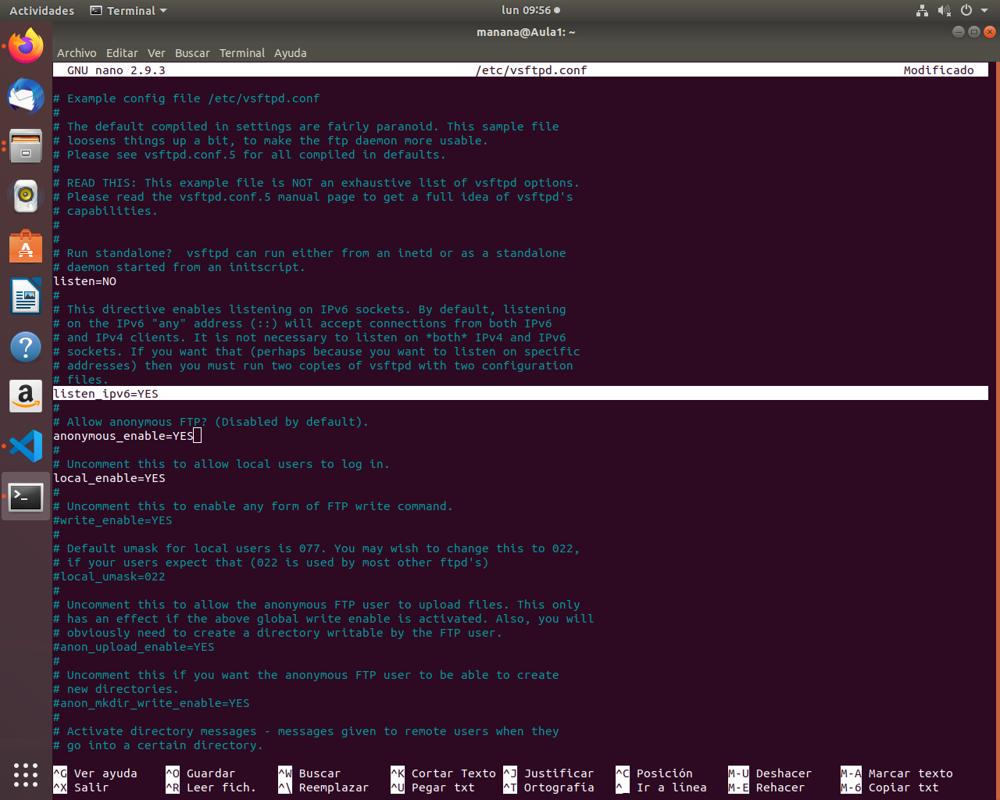
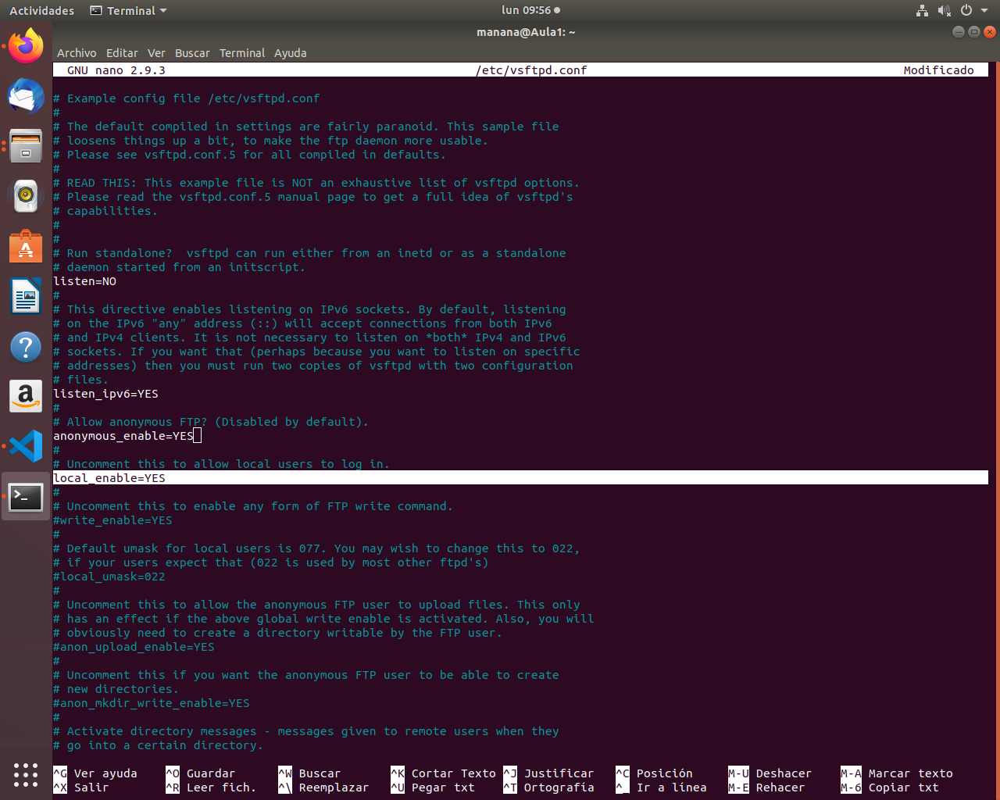

(Ya viene configurado en modo pasivo por defecto)
Instala el servidor vsftpd en la Raspberry Pi con que tenga las siguientes características:
Que sea un servidor FTP anónimo para descargas.
Que sea un servidor FTP para usuarios de sistema y que puedan tanto descargar como subir archivos.
Funcionar en modo pasivo.
Habilita los logs.
Usamos el comando "sudo less/var/log/vsftpd.log"
Cambia el mensaje de bienvenida.
Ponemos el comando "sudo nano etc/motd"
Buscamos en internet un convertidor de texto a ascii y solamente tendremos que copiarlo y pegarlo.